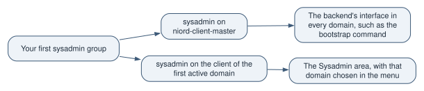

Niord documentation › Country kit guides
This guide ships in the country kit package as docs/operators-guide.md. It is rendered here from the kit as it
stands in the source this site was built from; a country reads the copy of the version it builds on in
.niord/kit/. A guide this page names only by its file in the kit package is not on this site: it is
read in the kit package only.
For the operators of a country’s deployment: its sysadmins and admins. It says what a new deployment
already holds, and what you set up in it yourself, in the order one step depends on another. You
work only in the administration app and in Keycloak’s admin console: no code, no files, no
repository. Read the kit package’s docs/responsibilities-and-upgrades.md first for who
owns what.
Before you start, the installer has deployed the images and run the bootstrap once on the new
database (Staging in the kit package’s docs/country-guide.md in the country guide’s Deploy). That part is verified
at the deploy step (About these guides).
Finding your way
The administration app’s menu has two areas, Admin and Sysadmin. Each holds sections, and this guide names a place as area > section: Sysadmin > Domains is the Domains section of the Sysadmin area. Every section’s page has a Help link into the user manuals at docs.niord.org: the admin manual, the sysadmin manual and the editor manual. This guide links the same pages and gives each step itself; the manuals describe the pages in full.
The Sysadmin area needs the sysadmin role, and Admin needs admin or more. The app checks your roles in the domain you work in, which you choose in the menu.
What a fresh deployment holds
The base product’s bootstrap gives every new deployment the same start, in English only:
-
The master domain, Keycloak ID
niord-client-master, named Master, with no message series and no time zone. It is active (since 4.0.123), so a sysadmin with the role on its client reaches the Sysadmin pages on it; a country’s bootstrap may leave it inactive by restating it with"active": falseonly. -
The base product’s templates and scripts: the message templates, the mail templates and the scripts they use, under Sysadmin > Script Resources.
-
The built-in print reports
standard,draftandpublic, under Sysadmin > Print Reports. -
The generic categories, among them Firing Exercises. The firing schedules find that category by its exact English name to file the messages they generate. Never rename it.
-
The parameter types the templates use, under Sysadmin > Parameter Types.
-
The promulgation types NAVTEX, Twitter and Audio, in English and linked to no domain.
-
The AtoN dictionary,
aton, under Sysadmin > Dictionaries, beside the texts the backend writes at every start.
It holds no settings beyond those the backend writes at its first start, and no messages.
The country’s own bootstrap is applied in the same run, after the base product’s. Where it names something the base product’s archive created, its values win. What it holds is your country’s maintainers' choice: typically your domains and their series, your reports, your promulgation types and links, and your languages on the base product’s entries. Ask them for the list.
How to see it worked
These pages are in the Sysadmin area, which opens once step 1 below is done.
-
Sysadmin > Script Resources, Print Reports, Categories, Parameter Types, Promulgation Types and Dictionaries list what the bootstrap brought, and Sysadmin > Domains lists the country’s domains.
-
Sysadmin > Batch Jobs lists the jobs the backend ran since its last start. Right after the bootstrap, that is its import jobs (
script-resource-import,domain-import,category-importand the others), each completed. Their logs… say what each added and, for the country’s archive, what it replaced. A restart of the backend empties the list, so read the logs before one. After a restart, the lists of the first bullet are the check.
The bootstrap: once, on a new database
The installer runs the bootstrap once, after the install, with the base product’s archive first and then the country’s. The command itself is verified at the deploy step. It answers in one of these ways:
-
Accepted. The bootstrap then runs on its own and takes 5 to 20 seconds.
-
Refused: the backend is still starting. Nothing happened. Ask again in a moment.
-
Refused: the database is not new. It holds data, or a bootstrap ran or started on it before. The refusal names the state or the first table that holds a row. Nothing happened. If it says a bootstrap is running, wait for that one’s outcome.
-
Refused: an archive breaks a rule, or is too large. The answer names the archive and the rule. By default an upload takes 1 MB a part and 10 MB a request. Nothing happened.
There is no retry. A bootstrap that failed, or broke off, is refused for good on that database. The remedy is a new, empty database, the backend started on it, and the same command with the same archives. Never restart a bootstrap’s import job from Sysadmin > Batch Jobs: the page refuses it, with "The batch execution was not restarted".
![Diagram. The installer runs the bootstrap command once → Accepted: it runs on its own, 5 to 20 seconds. The installer runs the bootstrap command once → Refused: the backend is still starting. Nothing happened. Refused: the backend is still starting. Nothing happened → The installer runs the bootstrap command once (ask again in a moment). The installer runs the bootstrap command once → Refused: the database is not new. Nothing happened. The installer runs the bootstrap command once → Refused: an archive breaks a rule, or is too large. Nothing happened. Accepted: it runs on its own, 5 to 20 seconds → Refused for good on that database (it fails or breaks off). Refused for good on that database → A new, empty database, the backend started on it, the same command and archives.](operators-guide-diagram-1.svg)
If the sysadmin pages are out of reach
The administration app grants a role only on an active domain whose Keycloak client your sysadmin
holds a role on. A deployment bootstrapped with the base product’s archive alone has the master
domain, active since 4.0.123, so the Sysadmin pages are reachable on it with the sysadmin role on
niord-client-master. If a country’s bootstrap left the master domain inactive and brought no
active domain of its own, no domain grants a role and the Sysadmin pages send you back to the start
page; since there is no retry, the database is then recreated empty and bootstrapped again with
both archives, and the country’s maintainers correct the archive first.
The usual case looks the same: the country’s domain is active, but its Keycloak client does not exist yet, or your sysadmin holds no role on it. The menu then shows Messages only. Do step 1 below.
What you set up, in order
Each step says what to do, where, and how to see it worked. Where a domain field names something a later step creates (areas, categories, series), come back to the domain once it exists.
Each step starts with its tag: Mandatory for every deployment, or When it applies for a deployment that has the case its line names. The guides' index explains the tags (What is mandatory, and what is optional).
The drawing shows every step, all 17. An arrow leads from a step to a step that needs it, and a dotted arrow is a domain field that names a later step’s data. Step 1 opens the administration app for every other step, so only its arrow to step 2 is drawn. The steps in the box need no other step, and no step needs them.
![Diagram. Step 1: Keycloak, the first domain client → Step 2: Domains. Step 3: Areas → Step 2: Domains. Step 6: Categories → Step 2: Domains. Step 7: Message series → Step 2: Domains. Step 2: Domains → Step 8: Publications. Step 2: Domains → Step 14: AtoN data. Step 2: Domains → Step 16: Users, groups and roles. Step 2: Domains → Step 9: Promulgation types. Step 3: Areas → Step 9: Promulgation types. Step 2: Domains → Step 13: Firing schedules. Step 3: Areas → Step 13: Firing schedules. Step 7: Message series → Step 13: Firing schedules. Step 2: Domains → Step 17: A first message. Step 7: Message series → Step 17: A first message. Steps that need no other step: Step 4: Charts; Step 5: Sources; Step 10: Mailing lists; Step 11: Dictionaries and texts; Step 12: Templates and reports; Step 15: Settings.](operators-guide-diagram-2.svg)
1. Keycloak: who may sign in, and the domain clients
Mandatory. In Keycloak’s admin console, in the realm the deployment signs in to:
-
The client
niord-webis the administration app’s sign-in. -
Each domain is a client whose client ID is the domain’s Keycloak ID. It holds the roles
user,editor,adminandsysadmin, each including the one before it. No one signs in through it; it only holds roles. The administration app grants a role only from the client of the domain you choose in the menu. -
The client
niord-client-masteris the base product’s own. The backend honours a role on it in every domain, so it counts for calls to the backend’s interface, such as the bootstrap command. The administration app does not read it: a role there opens no area of the app. -
The app acts in Keycloak with the signed-in person’s own rights. A sysadmin who creates domain clients needs the
realm-managementclient’smanage-clientsrole, and an admin who manages users needs itsmanage-usersrole. Give these through a group.
Your first sysadmin needs the sysadmin role twice: on niord-client-master, and on the client of
the first active domain, which your country’s bootstrap brought. Ask your maintainers for that
domain’s Keycloak ID.

That first client does not exist until someone presses Create in Keycloak, and the button is in the Sysadmin area, which the app shows only to a sysadmin of the chosen domain. So create this one client by hand, unless the realm the installer set up already holds it:
-
Clients, Create client. The client ID is the domain’s Keycloak ID. Keycloak’s defaults on the next two pages work, since the client only holds roles. Save. (Create in Keycloak makes its clients from the backend’s template: the domain’s name as the name, bearer-only, Client authentication on, Standard flow and Direct access grants on and the other flows off,
/*as the redirect URI, and full scope off.) -
On the client’s Roles tab, create
user,editor,adminandsysadmin. -
Open
editorand adduseras an associated role. Do the same foradminwitheditor, and forsysadminwithadmin. -
Give the first sysadmin’s group the client’s
sysadminrole, beside thesysadminrole onniord-client-master: Groups, the group, Role mapping, Assign role, filtered by clients. Users, the user, Groups names the user’s group.
Every later domain’s client comes from Create in Keycloak: save the domain in step 2, open it again, and press the button. Whether the installer’s realm holds the first client, and the production realm itself, are verified at the deploy step.
How to see it worked: your sysadmin signs in, chooses the domain in the menu, and the Sysadmin area appears. After Create in Keycloak, Sysadmin > Domains shows a tick beside the domain’s Keycloak ID, and the domain’s editor says the client exists in Keycloak. The manual: Keycloak integration.
2. Domains and their time zones
Mandatory. Every domain has its time zone, and every domain but the first (step 1) its client from Create in Keycloak. Create with New Domain only the domains your bootstrap did not bring; open each one it brought with the pencil, check its fields, and press Create in Keycloak.
Sysadmin > Domains, New Domain. Give each domain:
-
a Keycloak ID, unique, which is also its Keycloak client;
-
Active ticked: only an active domain appears in the menu’s domain list;
-
a Name;
-
a Time Zone. Choose the zone of the waters the domain covers; leave none blank by accident. The zone formats the times the administration app shows while this domain is chosen in the menu; with no zone, the app uses the browser’s own. It also formats the times the backend writes into the domain’s message texts and documents, the PDFs the public site offers among them. The public site’s pages do not read it: they show times in the zone your country’s build names, UTC unless the maintainers set another. That zone is your maintainers' setting, not yours: ask them to set it to the zone you choose here (The public site’s time zone in the kit package’s
docs/country-guide-in-depth.md); -
Publish ticked for a domain whose messages the public site shows. The field’s hint reads "Promulgate messages by default"; in this app the public site and the public interface serve only the messages of domains that are active and have Publish ticked;
-
the map centre, sort order, colour and the AtoNs and Templates flags as the manual describes.
Then press Save Domain, open the domain again with the pencil, and press Create in Keycloak.
How to see it worked: the domain is in the list with its time zone, and in the menu’s domain list. The manual: Domains. Two things the manual leaves out: Create in Keycloak shows only on a saved domain, and the copy button beside the pencil starts a new domain from an existing one.
3. Areas
When it applies: for the areas your bootstrap did not bring. A message needs no area, so a deployment whose bootstrap brought its areas skips this step.
Admin > Areas, New area and New sub-area, as a tree. An area of type Firing area gets a firing schedule in step 13.
How to see it worked: the tree shows the areas, and a domain’s Areas field offers them. The manual: Areas.
4. Charts
When it applies: if your messages name the charts they concern.
Admin > Charts, New Chart, or Import… from the page’s menu with a file your maintainers give you.
How to see it worked: the chart list shows them, and the message editor’s chart field offers them. The manual: Charts.
5. Sources
When it applies: if your messages name their sources.
Admin > Sources, New Source.
How to see it worked: the message editor’s source field offers them. The manual: Sources.
6. Categories
When it applies: if you need categories beyond the bootstrap’s, or a domain offers only some of them. A domain with no categories linked offers every category except those whose own Domains field names other domains only. The base product’s categories name no domain.
Sysadmin > Categories, New category and New sub-category. A category may be a template category, with its script resources and template parameters. Link categories to domains in the category’s Domains field or the domain’s Categories field. Keep the name Firing Exercises as it is.
How to see it worked: the tree shows the categories, and the message editor of a linked domain offers them. The manual: Categories.
7. Message series and their numbering
Mandatory. Every domain you write messages in has its series: a message is verified and published only with one. Create those your bootstrap did not bring.
Sysadmin > Message Series, New Message Series: the Message Series ID, the Main Type (Navigational Warnings or Notices to Mariners), the Number Sequence Type (Yearly, Continuous, Manual or None), the Short Format with its tokens, and for a warning series the NAVTEX Preamble. Next number sets the number the next published message gets. Then add the series to its domain: Sysadmin > Domains, the domain’s Message Series field.
How to see it worked: the series list shows the series with its sequence and next number, and the domain list shows the series beside its domain. The manual: Message series. This app adds a Search Index field, which leaves a series' messages out of the free-text search.
8. Publication categories and publications
When it applies: if you issue publications, or your messages cite them.
Admin > Publication categories first: each category groups publications on the public site, and its Show on the public site decides whether they appear there. Then Admin > Publications, in the domain the publications belong to: New creates a publication series, and its issues are released under it. Can be cited from messages in names the domains whose messages may cite it.
How to see it worked: the publication appears on the public site’s publications page when its category is shown there and an issue is published. The manual’s Publications chapter describes the earlier page: this app’s series and issues work as the page’s own texts say.
9. Promulgation types and their transmitters
When it applies: if you promulgate messages, by NAVTEX, SafetyNET, Twitter, audio or a service of your own.
Sysadmin > Promulgation Types. Add Promulgation Type for each of your own (a SafetyNET type, a second NAVTEX type), choosing its Service ID. For the base product’s NAVTEX, Twitter and Audio, open each with the pencil and set its Domains and its Language. A type’s own settings open from its editor once it is saved: a NAVTEX type’s Transmitters and a SafetyNET type’s Areas, each with Manage…, and Twitter’s Settings, with Update Settings….
How to see it worked: the list shows each type with its domains and language, and the message editor of a linked domain offers it. The manual: Promulgation types.
10. Mailing lists and their triggers
When it applies: if you send messages by mail.
Admin > Mailing Lists, New Mailing List, then Add Trigger: a Status Change trigger (for Published, Cancelled or Expired) or a Scheduled one, each with the template it sends. Add the recipients with Manage Recipients: users, and contacts from Admin > Users & Contacts, Contacts tab.
How to see it worked: Test trigger on a trigger, then Sysadmin > Mail Queue shows the mail. The manuals: Mailing lists and their triggers.
11. Dictionaries and texts
When it applies: if a text the backend serves needs other wording, or your maintainers give you a dictionary file.
Sysadmin > Dictionaries holds the texts the backend serves (web, message, mail, pdf and
template) and the AtoN dictionary. Change a value with the pencil. Import… takes a
dictionary file and shows a preview first: Would add for keys this deployment lacks, ticked, and
Would overwrite for keys it has with other values, which change only when you tick them.
How to see it worked: the changed text shows where it is used, after a reload. The manual: Dictionaries.
12. Templates and reports, by import
When it applies: when your maintainers give you a template’s, script’s or report’s import file.
The templates and reports your country adds or changes arrive as import files from your maintainers, never by themselves.
Sysadmin > Script Resources, Import…: the preview lists Would add (ticked), Would overwrite (unticked), Unchanged and Refused with each path’s reason. Show diff puts this deployment’s row beside the file’s. An overwrite happens only for a path you tick. Import ticked starts the import job. Every write is recorded with your user name and the source Import, and the pencil’s Revision History shows it.
Sysadmin > Print Reports, Import…, has no preview: a report the file names replaces the report with the same id whole. Export… first, to keep a copy.
How to see it worked: the import’s batch job is completed, and the script resource’s revision history shows the import. The manual: Script resources and Print reports.
13. Firing areas and their schedules
When it applies: if your waters have firing areas.
The firing areas are areas of type Firing area (step 3). One domain holds a message per firing area, and another receives the generated firing exercises, each with its series. Then Sysadmin > Firing Schedules, New Firing Schedule: the Domain, the Target Domain, the Target Message Series, the Scheduled Days, and Generate firing exercises ticked.
How to see it worked: in the firing areas' domain the menu shows Schedule, the Firing Area Schedule page. A scheduled exercise appears there, and after Update Firing Exercises… as a message in the target domain under the category Firing Exercises. The manual: Firing schedules.
14. AtoN data
When it applies: if a domain shows AtoNs.
The administration app has no page that loads AtoN records. A domain’s AtoNs flag switches the AtoN layer on for that domain, and the AtoN dictionary comes with the bootstrap. Ask your country’s maintainers how your deployment gets its AtoN records.
15. Settings
Mandatory. Sysadmin > Settings lists the settings an operator may change, with Filter. The pencil changes a value, and only the value. There is no reset and no delete. Only the keys the code declares are listed: a row of an earlier version that no code declares stays in the database, unlisted. A password value is never shown. Import… and Export… take a settings file.
Check at least the addresses (baseUri, adminAppUrl, authServerUrl), the mail sender
(mailSender), and documentationUrl, which the Help links open. The language keys are in
A new language in a running deployment.
A value can also be given to the server at its start, as a system property or an environment
variable with the setting’s name. For a text setting, such a value wins over the page’s, and the
page does not show it. A list or other JSON setting, such as modelLanguages, is changed on the
page only: both applications read its stored value whatever the server was given, and the server
cannot read a list given that way. The page lists the stored value, and the pencil changes that one, which the server uses only once
the start-up value is no longer given. The local launcher gives adminAppUrl that way, so on a
local run its row may read empty while the server uses the launcher’s address. Ask your installer
which settings a deployment gives at its start.
How to see it worked: the list shows the new value. The manual: Settings describes the earlier model: its file and environment sections no longer hold.
16. Users, groups and roles
Mandatory. In Keycloak’s admin console, give people their roles through groups: a group holds a
domain client’s role (user, editor, admin or sysadmin). The app shows a person what their
role on the chosen domain’s client allows, so a person who works in three domains needs a role on
each of the three clients. A role on niord-client-master counts for the backend’s interface in
every domain, such as scripts and the bootstrap command, never for the app’s areas and menus.
Admin > Users & Contacts, Users tab, searches the realm’s users, adds one with Add, and moves a user in and out of the current domain’s groups. Niord keeps its own record of a person from their first sign-in.
How to see it worked: the person signs in and sees the areas their role allows. The manuals: Users & contacts and user groups.
17. A first message
Mandatory. In the menu’s Editor, choose a domain with a series, then New blank NW. Fill in the Type, which is required; the series, in the ID field, which is chosen already when the domain has one series; the area; and the text. Save. On the message’s status page use Verify message…, and then Publish message…, which a draft does not offer until it is verified.
How to see it worked: the message has its number in the series' short format, and it shows on the public site. On a local run that is checked by hand; on a deployment it is verified at the deploy step. The manual: Editor and the status page.
A new language in a running deployment
When it applies: when your maintainers ship a new language. A deployment that already has its settings keeps them: the backend adds at its start only the settings it lacks, and never changes one it has. So the new language stays off in both applications until you turn it on. Once the version with the language runs, on Sysadmin > Settings, change with the pencil:
-
modelLanguages, a JSON list such as["en", "zz"]: the message languages, a field each in the editor; -
siteLanguages, a JSON list: the administration app’s languages. A language the build ships no texts for is left out; -
infoSiteLanguages, a JSON list: the public site’s languages, again only those the build ships; -
defaultLanguage, a text such aszz, only when the new language becomes the default. It must be one ofmodelLanguages; otherwise the first of them is used; -
infoDefaultLanguage, a text, only when the new language becomes the public site’s default. It must be one of the public site’s languages; otherwise the first of them is used.
Ask your maintainers which of the lists the language joins: a language may be a message language
only, without texts for the applications. For the two text keys, defaultLanguage and
infoDefaultLanguage, a value the server is given at its start wins over the page (step 15). The
three lists are JSON, and both applications read the value the page shows. Then reload both
applications: each reads its languages when it loads.
How to see it worked: the administration app’s language menu in its header lists the language, and the editor shows a field for it. The public site’s menu offers it beside its other languages.
The names and texts that exist already, such as those of areas, categories and domains, have no text in the new language until someone fills its field in their editors, or imports a file your maintainers give.
The server’s home folder
The backend keeps its files in its home folder: the repository of attachments, the batch files, the
archives and the message index. The setting niord.home names it. Your country’s own defaults set
it to ${NIORD_HOME}, which the server reads as the folder the deployment mounts.
How to see it worked: Sysadmin > Settings lists niord.home with the value ${NIORD_HOME}. The
backend’s start log says Default setting niord.home = ${NIORD_HOME} (country). Do not change the
value on the page. The volume itself is verified at the deploy step.
The base product’s generic deployable, without a country, follows NIORD_HOME too (since 4.0.123):
when no niord.home property or variable is set, its niord.home takes the NIORD_HOME system
property, else the environment variable, ahead of the database row; only without any of them does
it fall back to ${user.home}/.niord. Check the Settings page on such a deployment before anyone
enters data.
The execution mode. A fresh database starts in mode test (since 4.0.124): both frontends then
show a TEST ribbon, the public site included. A production deployment sets the environment variable
mode=production in its chart values; the backend reads a system property or environment variable
named like a setting ahead of the stored row, so no database edit is needed, and a deployment whose
values forgot it shows the ribbon instead of passing as production.
The server’s clock
The backend runs in UTC. Times stored without a zone are written and read in the server’s zone, so a server on a zone with summer time would shift them by an hour in the autumn hour that happens twice. The domains' time zones (step 2) format what the administration app and the backend’s documents show; the public site uses the zone its build names (step 2). The chart and the images set UTC; that is verified at the deploy step.
Cut-over from an existing deployment
When it applies: if your deployment takes over an existing database. Such a deployment is not bootstrapped: the database holds data. Templates are data in the database, so a template the new version needs and the old database never had is missing until you import it.
-
Read the missing-path report first. In the app you see it in the Script Resources import’s preview: an add the report lists is marked In the missing-path report, and Only the paths the missing-path report lists ticks those and no other. Import only them, and tick no overwrite. The backend also logs the report at every start.
-
An import is your own decision, never a step of an upgrade. Data on any environment other than a developer’s own changes only when a person says so.
-
A stale script row copied from an older deployment stays as it is until a sysadmin imports the release file that carries the current one and ticks its overwrite.
-
The message index (a known fault, not yet fixed): an index of an older format in the home folder’s
message-indexfolder stops the start. The remedy, the installer emptying that folder before the first start, is not verified.
Every part on a real volume is verified at the deploy step.